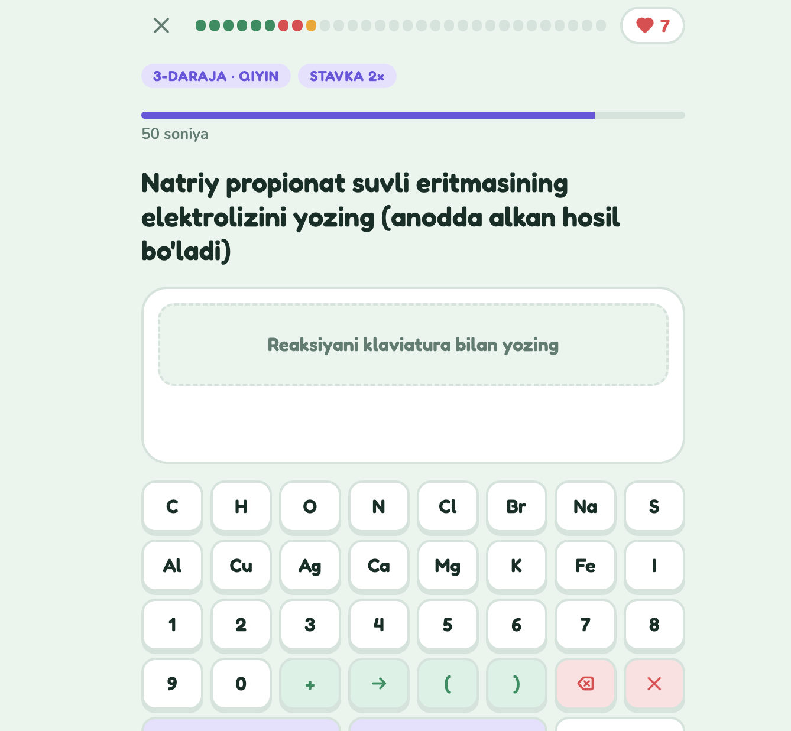

24 kunda organik kimyo: har kuni yangi mavzu, 30 ta savol, ball va seriya.
Hamma uchun bepul · kimyo-sertifikat.vercel.app
Savollarning 80% yangi mavzudan, 20% oldingi mavzulardan takror. Qiyinlik kun sayin oshib boradi.
Tenglamani yoyib (CH₃CH₂CH₂Cl) yoki qisqa (C₃H₇Cl) yozsangiz ham bo'ladi.

Vaqt tugasa ham javob bera olasiz, lekin to'g'ri javob yarim ball beradi. Varaqdan ko'chirishga vaqt yetmaydi: darslikni o'qib, o'rganib keling.
Omad! Yuraklaringiz ko'p bo'lsin ♥